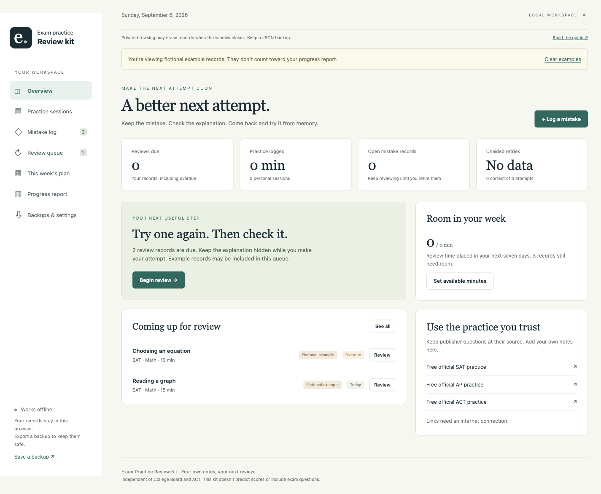

EXAM PRACTICE REVIEW KIT
You checked
your score.
What’s next?
Give your practice mistakes a next step.
Keep the question reference, write your correction and come back for another attempt. Build a seven-day review plan around the time you actually have.
$29 USD once, plus applicable tax. Download after payment.
Already a zovo.one lifetime member? Use your included access.
For your own AP, SAT and ACT practice material.
The score calculators stay free.
THE MISTAKE
Reversing the
wrong operation
“I subtracted 2 again.
I needed to add it back.”
Solve it before checking.
AFTER THE ANSWER KEY
Keep the work behind
the score.
A wrong answer is easy to mark and forget. Keep its source beside a checked correction, then put another attempt in your review queue.

A retry you can describe
“Careless mistake” doesn’t tell you what to practise. Save the operation you missed, the source to check and a cue for your next attempt.
A score with its context
Keep the resource and score type with each practice session. AP, SAT and ACT stay on their own scales, and repeat material stays marked.
TRY THE ROUTINE
Attempt first.
Then open
the correction.
Work through this small example on paper. Choose how you attempted it, then check your answer.
An assisted attempt stays separate from an unaided one. You can still record what needs another pass.
A limited preview with original, fictional material. Nothing you do here saves a study record.
Reverse each operation
Source · Original example written for this kit
Solve 3(x − 2) = 15.
Explain the operation at each step.
Make an attempt before opening the correction. Used a hint or checked your notes? Choose the second option.
Divide both sides by 3 to get x − 2 = 5. Add 2 to both sides, so x = 7.
Check by substitution. 3(7 − 2) = 15.
The full app saves retry history and lets you edit the next review date.
Two fictional tasks, due today. The full app plans across seven days and respects your optional exam date.
PLAN THE WEEK YOU HAVE
30 minutes
can’t hold
40 minutes of work.
Enter the minutes available each day. The planner places whole review tasks where they fit and keeps the work that needs more time visible.
Move the slider to try it. At 30 minutes, one 20-minute task fits today. The other still needs room.
Task estimates and review dates are yours to edit. A schedule doesn’t predict your next exam score.
ONE ZIP, READY TO KEEP
A workspace
and a routine
to go with it.
Download after payment. Extract the ZIP and open the start page in Chrome on desktop. Your copy works offline.
Use your own question material. The kit doesn’t include a question bank or a subject course.
Browser workspace
Mistake log, review queue, practice sessions and a seven-day capacity plan.
Review guide and worked examples
Follow the routine with original examples. Keep useful free practice sources close.
Printable worksheets
Review sheets, a weekly capacity sheet and a tutor handoff page for paper practice.
Backups and exports
Save and restore a JSON backup. Export your records as CSV or print your plan and report.
BEFORE YOU BUY
Make sure it fits
how you study.
Your browser holds your study records
Your notes save in local browser storage. Keep a separate JSON backup, especially before moving the app, switching devices or clearing browser data. Private browsing can erase records when the window closes.
The workspace doesn’t send your practice notes to the payment service. Your copy doesn’t automatically sync between devices.
Desktop download, with a hosted option
The downloaded app has been tested in Google Chrome on desktop. Extract the ZIP before opening it. A paid browser workspace is also available through your access link and fits a small screen; it needs an internet connection to open.
Local and hosted workspaces use separate browser storage. Export and restore a JSON backup to move your records. Mobile ZIP handling depends on your device, so use the hosted workspace on a phone.
Free practice is still part of the plan
Keep learning with Bluebook, official SAT practice, Khan Academy, AP practice resources and free ACT practice. Teacher access can affect the material available in AP Classroom.
Buy the kit if you want a separate place for the mistakes and follow-up work across those sources. A notebook or spreadsheet may already do what you need.
One student, with help from a parent or tutor
Your purchase covers personal use of the current version by one student, including help from a parent or tutor. You can keep your downloaded copy. Don’t resell the kit or share it across a class.
The purchase doesn’t include tutoring, future releases or a score guarantee. Review intervals are editable planning defaults, not a proven schedule for every student.
YOUR NEXT REVIEW STARTS HERE
Give the next
attempt a place.
Exam Practice Review Kit
Your own practice records, an editable review queue and a week that fits the time you have.
$29 USD
One payment, plus any tax shown at checkout.
No subscription.
Pay through Stripe. Download the ZIP after payment.
Try it with your own practice
If it isn’t useful, email support@zovo.one within 14 days of purchase for a full refund. Include your checkout email or receipt reference.
Read the purchase and refund terms